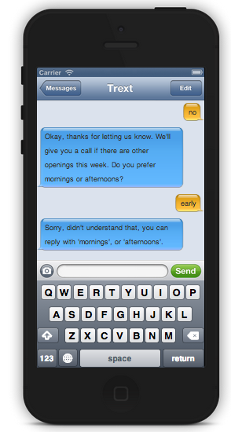
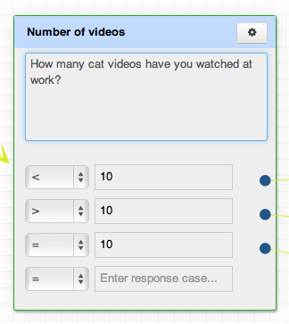
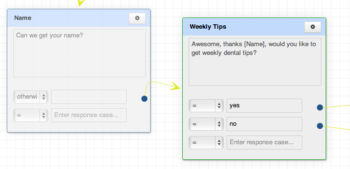
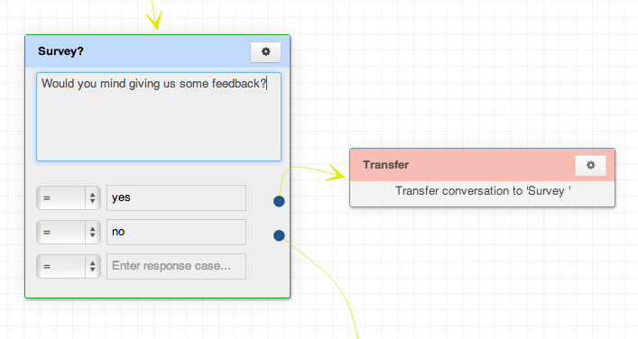

1. How do I start the conversation?
After you've finished a tree, you can try it out by clicking "test tree" to bring up our simulator. There are two ways to start the conversation: send out batch texts to a list of phone numbers or have people text in, giving them the name of your tree and your phone number. You'll need to be on a Trext plan to get a unique phone number and to send out batch texts.
2. How are texts counted
Each text sent and received by Trext costs us, so we have to count both directions. For example, this conversation would be 4 texts:
Trext: "How old are you?"
End User: "23"
Trext: "You're still eligible. Do you currently have insurance?"
End User: "yes"
3. What happens if someone texts in a word that isn't recognized?
What happens if someone texts in a word that isn't recognized? We have an automated message that says "Sorry, didn't understand that, you can reply with ______or ____" It will fill in with the answer choices you’ve written.

4. Do end-users have to opt-in?
We recommend that you allow users to opt-in to getting texts. In the first text, ask if they'd like to participate and let them know they can text "stop" anytime. There are also laws about sending batch texts, especially for commercial purposes. See our Laws and Best Practices document for more specific info.
What's the legality of sending batch texts?
We recommend you follow these best practices:
Be respectful: Be cognizant of the number of messages you're sending to avoid a poor user experience.
Do only what you say: If you say you'll send weekly tips, don't send ads or other messages. Be compliant: When promoting a Trext tree, ensure that all forms of advertising include clear and conspicuous terms and conditions associated with offers and adheres to all state and federal regulations.
- Get consent from your users; get them to opt-in. Get it in "writing:" collect the recipient consent in a web form, database table, or other permanent storage.
- Let them know they can text "stop" at anytime to end a conversation
- Keep a "Do Not Text" list of numbers who have opted-out, and don't include them the next time you send out a tree.
- Let users know that "Standard messaging and data rates may apply" (shorten the text by saying "Msg & data rates may apply")
- Don't text anyone under 13
- Be sure to notify people if you’re sending sexually explicit content.
- Empathize with your users; how would you react to getting this text?
See our Laws and Best Practices document for more specific info.
Can I use Trext internationally?
When you sign up for an account, we will get you a unique U.S. phone number. Your end users can text into this number to access your Trext decision trees, however it might be costly for someone internationally to text a U.S. number. If you’re interested in using Trext in a specific country, contact us and we'll discuss the possibility.
How does Trext handle numbers/quantitative responses?
You can choose "=" from the drop down next to each response, then type a number.Or you can use the "<" and ">" signs. Remember there’s no "greater than or equal to" option, so you'll need to also include an "=" like this:

How do I reference the end user's name or other info to personalize the conversation?
Just use brackets to refer to the name of the node you'd like to reference. For example, call the node "Name," then in the next node, use brackets around [Name]. You can use this feature to confirm someone's email, or give the conversation a personal tone. Be sure to choose the "otherwise" option to accept all texts because people's names will be different.

How do I transfer a conversation to another tree?
At the node where you'd like to transfer, click the settings wheel in the upper right-hand corner. Choose the tree you'd like to link-up with. The end user will then seamlessly go from one tree to the next.
